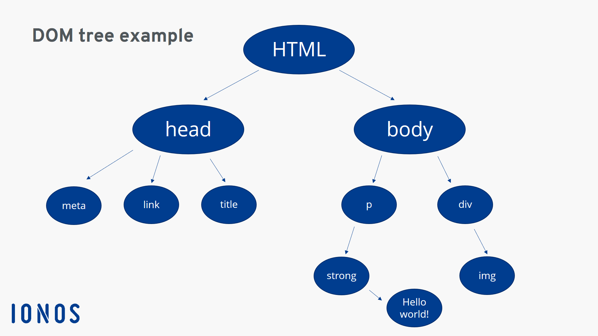

El objeto document es el objeto básico del lado del cliente. Proporciona acceso a la página web, proporcionando propiedades y métodos para acceder a los objetos que componen esa ventana del navegador. El objeto document es el objeto básico del lado del cliente. Proporciona acceso a la página web, proporcionando propiedades y métodos para acceder a los objetos que componen esa ventana del navegador.
Nodos: Cada elemento, atributo, texto o comentario en el documento es un nodo.
Representa el documento completo (por ejemplo, html en HTML).
Representan las etiquetas HTML, como div,p, etc..
Contienen el contenido textual dentro de las etiquetas.
Representan los atributos de las etiquetas HTML, como id o class.
Representan los comentarios en el código HTML ().
Los nodos tienen relaciones como padre, hijo y hermanos. Esto permite navegar por el árbol del DOM.
El DOM es accesible mediante lenguajes de programación como JavaScript, lo que permite manipular la página en tiempo real.
Se puede acceder a cualquier nodo o elemento del documento.
Permite:Cambiar el contenido de un nodo, Modificar atributos, como clases o estilos, Agregar o eliminar nodos.
Se pueden crear elementos y estructuras HTML dinámicamente
Cambiar estilos CSS directamente desde el script.
Capturar eventos (como clics, movimientos del mouse, etc.) y responder a ellos.
El DOM es fundamental para la creación de aplicaciones web interactivas. Gracias a él, los desarrolladores pueden:
El DOM es la puerta de entrada para que los desarrolladores web interactúen y modifiquen los documentos HTML o XML de manera estructurada y programable. Su comprensión es esencial para el desarrollo de aplicaciones web modernas y dinámicas.